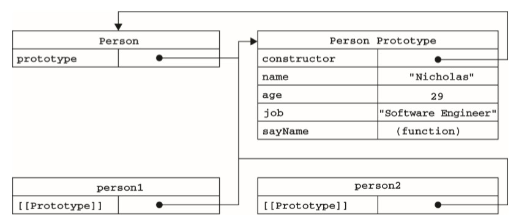
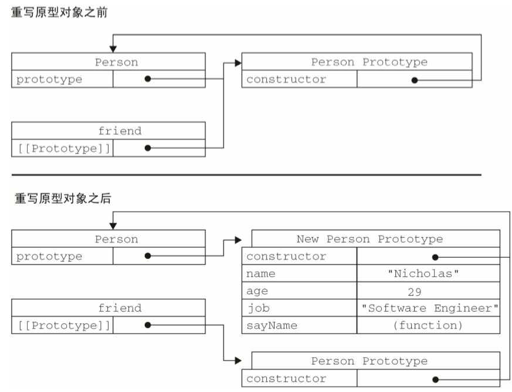
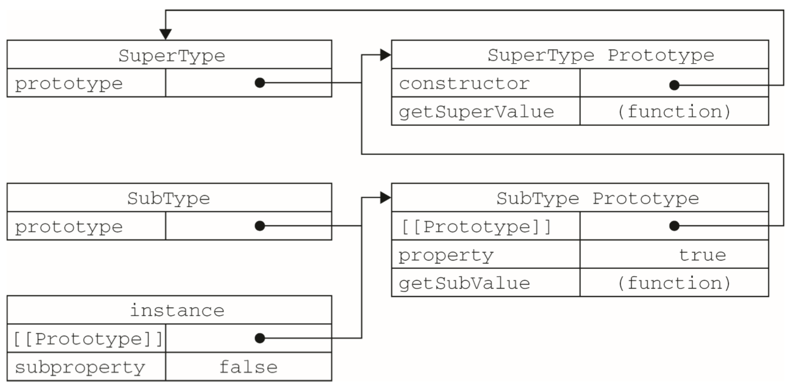

6 面向对象的程序设计
（注意：js中的面向对象实现与C++中不同）
6.1 理解对象
1 | var person = new Object(); |
6.1.1 属性类型
数据属性
ECMA-262第 5版在定义只有内部才用的特性（attribute）时，描述了属性（property）的各种特征。 实现 JavaScript引擎用的，因此在 JavaScript中不能直接访问它们。
为了表示特性是内部值，该规范把它们放在了两对儿方括号中，例如[[Enumerable]]。
- [[Configurable]]：表示能否通过 delete 删除属性从而重新定义属性，能否修改属性的特性，或者能否把属性修改为访问器属性。像前面例子中那样直接在对象上定义的属性，它们的这个特性默认值为 true。
- [[Enumerable]]：表示能否通过 for-in 循环返回属性。像前面例子中那样直接在对象上定义的属性，它们的这个特性默认值为 true。
- [[Writable]]：表示能否修改属性的值。像前面例子中那样直接在对象上定义的属性，它们的这个特性默认值为 true。
- [[Value]]：包含这个属性的数据值。读取属性值的时候，从这个位置读；写入属性值的时候，把新值保存在这个位置。这个特性的默认值为 undefined。
要修改属性默认的特性，必须使用 ECMAScript 5的Object.defineProperty() 方法。这个方法接收三个参数：属性所在的对象、属性的名字和一个描述符对象。其中，描述符（descriptor）对象的属 性必须是：configurable、enumerable、writable 和 value。
1 | var person = {}; |
这个属性的值是不可修改的，如果尝试为它指定新值，则在非严格模式下，赋值操作将被忽略；在严格模式下，赋值操作将会导致抛出错误。
把 configurable 设置为 false，表示不能从对象中删除属性。如果对这个属性调用 delete，则在非严格模式下什么也不会发生，而在严格模式下会导致错误。
访问器属性
访问器属性不包含数据值；它们包含一对 getter和 setter函数（不过，这两个函数都不是必需的）。在读取访问器属性时，会调用 getter函数，这个函数负责返回有效的值；在写入访问器属性时，会调用 setter函数并传入新值，这个函数负责决定如何处理数据。
- [[Configurable]]：表示能否通过 delete 删除属性从而重新定义属性，能否修改属性的特 性，或者能否把属性修改为数据属性。对于直接在对象上定义的属性，这个特性的默认值为 true。
- [[Enumerable]]：表示能否通过 for-in 循环返回属性。对于直接在对象上定义的属性，这 个特性的默认值为 true。
- [[Get]]：在读取属性时调用的函数。默认值为 undefined。
- [[Set]]：在写入属性时调用的函数。默认值为 undefined。
1 | var book = { |
_year 前面的下划线是一种常用的记号，用于表示只能通过对象方法访问的属性。
只指定 getter意味着属性是不能写，尝试写入属性会被忽略。在严格模式下，尝试写入只指定了 getter 函数的属性会抛出错误。类似地，只指定 setter 函数的属性也不能读，否则在非严格模式下会返回 undefined，而在严格模式下会抛出错误。
6.1.2 多个属性
1 | var book = {}; |
6.1.3 读取属性的特性
Object.getOwnPropertyDescriptor()方法，可以取得给定属性的描述 符。这个方法接收两个参数：属性所在的对象和要读取其描述符的属性名称。返回值是一个对象，如果是访问器属性，这个对象的属性有 configurable、enumerable、get 和 set；如果是数据属性，这个对象的属性有 configurable、enumerable、writable 和 value。
1 | var descriptor = Object.getOwnPropertyDescriptor(book, "_year"); |
6.2 创建对象
6.2.1 工厂模式
1 | function createPerson(name, age, job){ |
6.2.2 构造函数模式
1 | function Person(name, age, job){ |
构造函数始终都应该以一个大写字母开头，而非构造函数则应该以一个小写字母开头。
使用了函数就是对象的想法，将属性添加到this上。
两个对象都有一个 constructor（构造函数）属性，该属性指向 Person。
若Person不使用new，则认为是在为window添加属性
可使用call将作用域限定为某个对象
使用构造函数的主要问题，就是每个方法都要在每个实例上重新创建一遍。在前面的例子中，person1 和 person2 都有一个名为 sayName()的方法，但那两个方法不是同一个 Function 的实例。不同实例上的同名函数是不相等的。
6.2.3 原型模式
解决构造函数的方法不相等问题。
prototype（原型）属性，这个属性是一个指针，指向一个对象，而这个对象的用途是包含可以由特定类型的所有实例共享的属性和方法。
prototype 就是通过调用构造函数而创建的那个对象实例的原型对象。使用原型对象的好处是可以让所有对象实例共享它所包含的属性和方法。
1 | function Person(){} |
在此，我们将 sayName()方法和所有属性直接添加到了 Person 的 prototype 属性中，构造函数变成了空函数。即使如此，也仍然可以通过调用构造函数来创建新对象，而且新对象还会具有相同的属性和方法。但与构造函数模式不同的是，新对象的这些属性和方法是由所有实例共享的。
原型对象的理解：只要创建了一个新函数，就会根据一组特定的规则为该函数创建一个 prototype 属性，这个属性指向函数的原型对象。所有原型对象都会自动获得一个 constructor（构造函数）属性，这个属性包含一个指向 prototype 属性所在函数的指针。当调用构造函数创建一个新实例后，该实例的内部将包含一个指针（内部属性），指向构造函数的原型对象。ECMA-262第5版中管这个指针叫[[Prototype]]。

Person 的每个实例—— person1 和 person2 都包含一个内部属性，该属性仅仅指向了 Person.prototype；换句话说，它们与构造函数没有直接的关系。
所有实现中都无法访问到[[Prototype]]，但可以通过 isPrototypeOf()方法来确定对象之间是否存在这种关系。
ECMAScript 5增加了一个新方法，叫 Object.getPrototypeOf()，在所有支持的实现中，这个方法返回[[Prototype]]的值。
每当代码读取某个对象的某个属性时，都会执行一次搜索，目标是具有给定名字的属性。搜索首先从对象实例本身开始。如果在实例中找到了具有给定名字的属性，则返回该属性的值；如果没有找到， 则继续搜索指针指向的原型对象，在原型对象中查找具有给定名字的属性。
当为对象实例添加一个属性时，这个属性就会屏蔽原型对象中保存的同名属性；换句话说，添加这个属性只会阻止我们访问原型中的那个属性，但不会修改那个属性。
使用 hasOwnProperty()方法可以检测一个属性是存在于实例中，还是存在于原型中。
in操作符
单独使用时，in 操作符会在通过对象能够访问给定属性时返回 true，无论该属性存在于实例中还是原型中。
1 | "name" in person1; |
ECMAScript 5也将 constructor 和 prototype 属性的[[Enumerable]]特性设置为 false，但并不是所有浏览器都照此实现。
要取得对象上所有可枚举的实例属性，可以使用 ECMAScript 5的 Object.keys()方法。这个方法接收一个对象作为参数，返回一个包含所有可枚举属性的字符串数组。
如果你想要得到所有实例属性，无论它是否可枚举，都可以使用 Object.getOwnPropertyNames() 方法。
更常见的做法是用一个包含所有属性和方法的对象字面量来重写整个原型对象:
1 | function Person(){ } |
有一个例外：constructor 属性不再指向 Person 了，指向Object
如果 constructor 的值真的很重要，可以像下面这样特意将它设置回适当的值。以这种方式重设 constructor 属性会导致它的[[Enumerable]]特性被设置为 true。可用defineproperty重设回来。
1 | constructor : Person, |
由于在原型中查找值的过程是一次搜索，因此我们对原型对象所做的任何修改都能够立即从实例上反映出来，即使是先创建了实例后修改原型也照样如此。
如果是重写整个原型对象，实例中的指针仅指向原来的原型，而不指向构造函数。
调用构造函数时会为实例添加一个指向初原型的[[Prototype]]指针，而把原型修改为另外一个对象就等于切断了构造函数与初原型之间的联系。
总结：先定义原型再创建实例，不然实例指向的是原prototype

问题
它省略了为构造函数传递初始化参数这一环节，结果所有实例在默认情况下都将取得相同的属性值。
共享，有时候需要分离的属性
因此不经常单独使用
6.2.4 组合使用构造函数模式和原型模式
1 | function Person(name, age, job){ |
构造函数模式用于定义实例属性，而原型模式用于定义方法和共享的属性。结果，每个实例都会有自己的一份实例属性的副本，但同时又共享着对方法的引用，大限度地节省了内存。
是目前在 ECMAScript中使用广泛、认同度高的一种创建自定义类型的方法。可以说，这是用来定义引用类型的一种默认模式。
6.2.5 动态原型模式(理解？)
它把所有信息都封装在了构造函数中，而通过在构造函数中初始化原型（仅在必要的情况下），又保持了同时使用构造函数和原型的优点。
1 | function Person(name, age, job){ |
6.2.6 寄生构造函数模式
寄生（parasitic）构造函数模式。这种模式的基本思想是创建一个函数，该函数的作用仅仅是封装创建对象的代码，然后再返回新创建的对象；但从表面上看，这个函数又很像是典型的构造函数。
1 | function Person(name, age, job){ |
除了使用 new 操作符并把使用的包装函数叫做构造函数之外，这个模式跟工厂模式其实是一模一样的。
首先，返回的对象与构造函数或者与构造函数的原型属性之间没有关系；也就是说，构造函数返回的对象与在构造函数外部创建的对象没有什么不同。为此，不能依赖 instanceof 操作符来确定对象类型。
我们建议在可以使用其他模式的情况下，不要使用这种模式。
6.2.7 稳妥构造函数模式
稳妥对象（durable objects）。所谓稳妥对象，指的是没有公共属性，而且其方法也不引用 this 的对象。
1 | function Person(name, age, job){ |
除了使用 sayName()方法之外，没有其他办法访问 name 的值。
6.3 继承
继承分为接口继承和实现继承。接口继承只继承方法签名，而实现继承则继承实际的方法。ECMAScript使用实现继承。
通过原型链实现
6.3.1 原型链
其基本思想是利用原型让一个引用类型继承另一个引用类型的属性和方法。
1 | function SuperType(){ |

instance.getSuperValue()会经历三个搜索步骤：1）搜索实例；2）搜索 SubType.prototype；3）搜索 SuperType.prototype，后一步才会找到该方法。
最上层的原型链继承自Object，因此也可以使用Object的方法。
使用instanceof/isPrototypeof()对原型链上的对象进行比较都会返回true
子类型有时候需要重写超类型中的某个方法，或者需要添加超类型中不存在的某个方法。但不管怎样，给原型添加方法的代码一定要放在替换原型的语句之后。
即在通过原型链实现继承时，不能使用对象字面量创建原型方法。因为这样做就会重写原型链
问题
1 SubType 的所有实例都会共享属性。
2 在创建子类型的实例时，不能向超类型的构造函数中传递参数。
6.3.2 借用构造函数
在子类型构造函数的内部调用超类型构造函数。通过使用 apply()和 call()方法也可以在（将来）新创建的对象上执行构造函数
1 | function SuperType(){ |
两者没有关系
如果SuperType可以传递参数，则使用call()方法也可传递参数
问题：方法都在构造函数中定义，无法复用函数。
6.3.3 组合继承
组合继承（combination inheritance），有时候也叫做伪经典继承，指的是将原型链和借用构造函数的技术组合到一块，从而发挥二者之长的一种继承模式。
过程：先定义supertype的属性，再定义subtype的私有属性，再定义原型链。
js中最常用的继承模式
6.3.4 原型式继承
1 | function object(o){ |
进行浅复制，复制后仍指向原来的对象（共享属性）
ECMAScript 5通过新增 Object.create()方法规范化了原型式继承。这个方法接收两个参数：一个用作新对象原型的对象和（可选的）一个为新对象定义额外属性的对象。
Object.create()方法的第二个参数与Object.defineProperties()方法的第二个参数格式相同：每个属性都是通过自己的描述符定义的。以这种方式指定的任何属性都会覆盖原型对象上的同名属性。
6.3.5 寄生式继承
1 | function createAnother(original){ |
6.3.6 寄生组合式继承
组合继承大的问题就是无论什么情况下，都会调用两次超类型构造函数：一次是在创建子类型原型的时候，另一次是在子类型构造函数内部。
寄生组合式继承，即通过借用构造函数来继承属性，通过原型链的混成形式来继承方法。|
不必为了指定子类型的原型而调用超类型的构造函数，我们所需要的无非就是超类型原型的一个副本而已。
1 | function inheritPrototype(subType, superType){ |
在定义完supertype和subtype之后调用此函数，则完成了继承。
总结
[[xxx]]当作是属性的属性，则可理解defineProperty和defineProperties的写法，以及getOwnPropertyDescripter指向的东西
模式：
[[Prototype]]实例所有，指向该实例的构造函数的原型对象
prototype为构造函数所有，指向该构造函数的原型对象
constructor实例所有，指向构造函数
- 工厂模式 createPerson() + return
- 构造函数模式 Person() + new
- 原型模式 Person()的对象名prototype含有的属性Person.prototype.xxx
- 上面两个组合
- 动态原型
- 寄生构造函数、稳妥构造函数
继承：
- 原型链。subType的prototype指向superType的实例，则逻辑：subType为superType的一个实例 -> subType拥有[[Prototype]]属性，且指向构造函数superType的原型对象superType.prototype -> 原型链构造完成，可以寻找到superType.prototype的属性
- 借用构造函数：在subType内使用call()或apply()构建superType属性的深复制。
- 上面两者组合
- 原型式继承
- 寄生式继承
- 寄生组合式继承